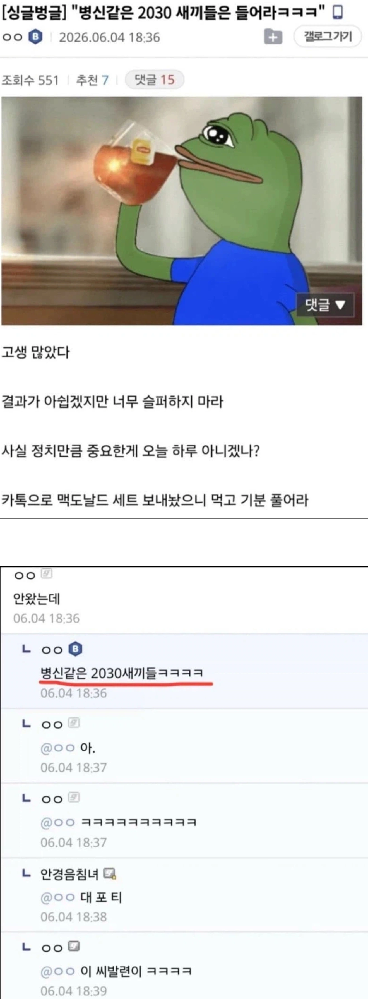
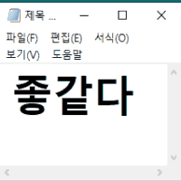

???: 병신같은 2030 새끼들은 들어라 ㅋㅋㅋ
댓글
킹 포 티
모르면 맞아야지 ㅋㅋ


크으읏 이런 메스씹포티가

사기치고 '그러니까 너넨 안되는거야' 까지 ㅋㅋ
연륜은 이거이거;;
이런거 먹고 속 버리지말고 든든한 맥날 세트 필요하면 언제든지 연락해요

저 B마크는 뭐임
안왔으면 병신이 아니란거아님?
십 ㅋㅋㅋㅋ
수미상관 개지리네
연륜이 느껴진다
ㅇㄱㄸ


킹포티

킹 포 티
모르면 맞아야지 ㅋㅋ
크으읏 이런 메스씹포티가

사기치고 '그러니까 너넨 안되는거야' 까지 ㅋㅋ
연륜은 이거이거;;
이런거 먹고 속 버리지말고 든든한 맥날 세트 필요하면 언제든지 연락해요
저 B마크는 뭐임
안왔으면 병신이 아니란거아님?
십 ㅋㅋㅋㅋ
수미상관 개지리네
연륜이 느껴진다
ㅇㄱㄸ
킹포티
세호야 또 속냐